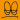
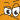
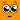
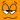
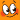

List of smileys currently supported
Fri Dec 27 02:01:47 EST 2013
Below is a small table of which smileys are currently translated. Note
:
)

:
(
:
P
:
p
B
)
:
D
:
~((
<
3

:
-(((

:
'(
:
|
:
o
O
_o

Z
Zzzz
:
-#

:
-]
 :)
:) :p
:p :~((
:~(( :|
:| :o
:o O_o
O_o :-# :) :p :~(( :| :o O_o :-#
:-# :) :p :~(( :| :o O_o :-#